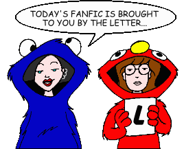
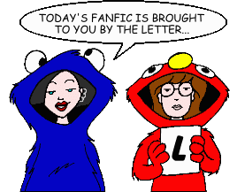

Fan Fiction
"L" by Author

Fan Fiction
"L" by Author

|
Authors: If you no longer wish for any of your stories to be posted, please send e-mail to fanfic@lawndale.net and I will remove them at once. |
| Larkin Mullin |
| Trent Caufield Category: Crossovers & Parodies The author imagines Trent as the protagonist from J.D. Salinger's "The Catcher in the Rye." |
| Larne Pekowsky (larnep@canetoad.com) |
| Alone Category: Miscellaneous Daria has the house to herself for a weekend, and not a single hijink ensues. Set shortly after the episode "Mart of Darkness." |
| Lauren (volcanicl@aol.com) |
| Gala Category: Miscellaneous Jane and Trent get a new neighbor, Gala. |
| Lauren Forse |
| Missing Category: Miscellaneous Daria runs away after her ex-friend from Highland comes back to haunt her. |
| LeadFeathered (leadfeathered@hotmail.com) |
| The New Girl Category: Romance When a new girl transfers to Lawndale, she manages to replace a member of Mystik Spiral, making Daria jealous in the process. Filled with surprising hookups and heartbreaks. |
| Lew Richardson (lewww@ivillage.com) |
| Heroes... [Artwork] Category: Miscellaneous It's nearing the Year 2000, Daria's life has become more of a living hell than usual, but she's not going to take anything from anyone... not anymore... |
| A Raven, Nothing More [Artwork] Category: Miscellaneous A "tribute poem" to the "Daria" fanfic community, based on (you guessed it) Edgar Allen Poe's poem "The Raven." |
| Liliane Grenier (jane_lane16@hotmail.com) |
| Trenteo and Dariet Category: Romance A twisted parody of Shakespeare's "Romeo and Juliet," with you-know-who in the title roles. |
| LILJELLYB |
| The Valentine Crush Co-written by T1TANIC111 Category: Holidays It's Valentine's Day, and l'amour is in the air. Need I say more? |
| LilMeg (rob.finnie@sympatico.ca) |
| Broken Girl Category: Miscellaneous Daria and Jane meet a new girl at school named Megan. When she writes a song for Trent, he ends up with a little more than just a song. |
| Liz (captainana@zebra.net) |
| Daria's Disciples Category: Miscellaneous The Fashion Club (minus Quinn) asks Daria to teach them how to be more like her. |
| Lord Dezz (thewoottozone@yahoo.co.uk) |
| The Festival Category: Miscellaneous Daria and Jane attend Beanfest 2000, notable only for the fact that Mystik Spiral is playing. Meanwhile, Quinn and her Fashion Club cronies are also in attendance (mainly to pass judgment on the "fashion disasters" they expect to see), as are several other familiar faces from Lawndale High. |
| Lourdes M. Cabrera (cyberprincess51@hotmail.com) |
| After Midnight at Dega Street Category: Miscellaneous Daria, Jane, Trent, Quinn and the Fashion Club end up spending the night together at Dega Street after attending an art fair. |
| Lawndale's Most Unwanted Category: Romance Trent is dating a girl named Claire, and Jane is dating Tom, leaving Daria even more alone and depressed... until she meets a new mystery man who is full of surprises. |
| Love Gordon (czarina33@mysentinel.com) |
| Daria's Mid Summer Night's Dream (*) Category: Crossovers & Parodies Daria and Trent! Jane and Tom! But Tom and Trent? Quinn and Kevin? Strange pairings, hilarious revelry, Upchuck as Punk, and more in this twisted send-up of the Bard. |
| Daria, the Hunted Category: Miscellaneous Nine years after "Behind the Pom-Poms," Trent hires a bounty hunter to find Daria... a bounty hunter who has some interesting secrets of her own. |
| A Dirge for Daria (*) Category: Miscellaneous Set in February of Daria's senior year. It's not *quite* what you expect... |
| Remembering a Girl (*) Category: Miscellaneous A sequel to "A Dirge for Daria," as Daria's friends recall her life years after her death. |
| What is Memory? Category: Miscellaneous A sort-of sequel to "Behind the Pom-Poms: The Brittany Taylor Story." Daria finds a baby on her doorstep, Quinn quits the Fashion Club, and Communists almost take over the country. |
| Lozzie (lforse2002@hotmail.com) |
| Love on the Rocks With No Ice Category: Romance Daria breaks up with Tom and Trent takes his place. It doesn't get more basic than that... |
| LSauchelli |
| Detective Stories #1: End of an Era (*) Category: Crossovers & Parodies Shortly after the murder of Police Commissioner Loeb, Lt. James Gordon and assistant DA Harvey Dent scramble to find the shooter before the mob can silence him forever. |
| Lumiere Twilight Forever (meanddarkwillow@yahoo.com) |
| Fashion Victim Category: Miscellaneous The Fashion Club enters a fashion contest, only to learn a little lesson: they have no fashion sense at all. Well, at least to the big shots. The moral: if you want nice clothes, shop at Cashman's. If you want desinger clothes: go to France. |
| LunaJane |
| Daria On Assignment Category: Miscellaneous Daria wins a trip to tag along on a Sick Sad World Special Assignment |
| Lupinsmoon12391 (lupins_moon12391@yahoo.com) |
| Change is in the Cheer Category: Miscellaneous When Jane and Mack get paired together on a science project, Jane begins to notice some strange things about him. |
| Sex, Please?! Category: Miscellaneous Quinn starts her own club, Helen tries to save the day, Trent gets a job, and Upchuck attempts to join the human race. Character development, much? |
| Luxa Goldmine (velvet_luxa@yahoo.com) |
| The Setup, Part 2 Category: Romance A sequel to "The Setup," which follows up on Daria and Trent after their trip to the movies. |
| Lydia Irene |
| With a Twin, Happily Category: Miscellaneous Daria's family adopts a girl with a "futuristic" look, and Mystik Spiral finally hits the big time. |